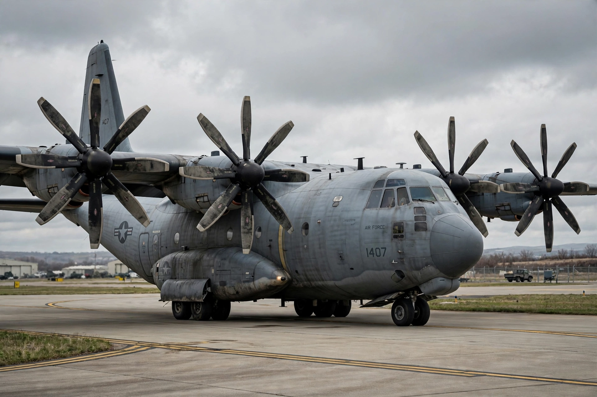

| Airbus A400M Atlas | |
|---|---|
| Manufacturer | Airbus Defence and Space |
| First flight | December 11, 2009 |
| Introduction | 2013, with the French Air Force |
| Status | In production, in service |
| Primary users | French Air and Space Force, German Air Force, Royal Air Force, Spanish Air Force |
| Produced | 2009–present |
The Airbus A400M Atlas is a European four-engine turboprop military transport aircraft designed by Airbus Military (now Airbus Defence and Space) to replace ageing tactical airlifters such as the Transall C-160 and the Lockheed C-130 Hercules. It can carry strategic loads, deliver them by parachute or land on short, unprepared airstrips, and act as an aerial refuelling tanker. It first flew on December 11, 2009, from Seville, Spain, and entered service with the French Air Force in 2013.

The programme originated in the 1980s Future International Military Airlifter project. Seven European nations — France, Germany, Italy, Spain, the United Kingdom, Turkey and Belgium — ordered 180 aircraft through the OCCAR agency in 2003, though Italy later withdrew. Development was troubled: the Europrop TP400-D6 turboprop, the most powerful turboprop ever flown in the West (11,000 hp), suffered software and gearbox problems, and the programme required a €3.5 billion renegotiation in 2010. South Africa cancelled its order in 2009; Malaysia became the first non-European customer.
The A400M has a maximum payload of 37 tonnes, a cargo hold 17.7 m long and 4 m wide, and can carry helicopters, armoured vehicles including a Boxer AFV, or 116 paratroops. Its propellers rotate "down between engines" to improve airflow over the wing. Cruise speed is about Mach 0.68–0.72, faster than the C-130, with a range of 3,300 km at maximum payload.
A400Ms have supported French operations in Mali, coalition missions in the Middle East, medical evacuations during the COVID-19 pandemic, and the 2021 Kabul airlift. A Spanish A400M crashed on a test flight near Seville on May 9, 2015, killing four crew. By the mid-2020s more than 120 aircraft had been delivered, with export orders from Kazakhstan and Indonesia. The type complements the smaller C-130 and larger Boeing C-17 in allied service.